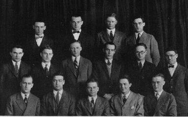
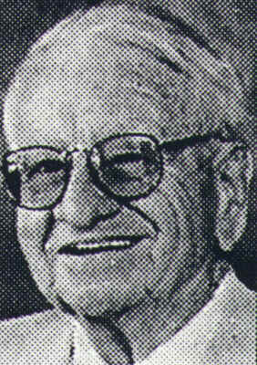

The TEXNIKOI fraternity was founded in 1924 as an honorary organization for students in the College of Engineering. At the time that this organization was founded, a number of the students felt that some effort should be made to recognize outstanding work in the extra-curricular field.

TEXNIKOI’s founding fathers
"The original 12 members of Texnikoi were engineering students who were heavily involved in extra-curricular activities, and scholastically had better than a ‘b’ average... but not as good as an ‘a’. I do not remember who first mentioned the formation of an organization, but it sounded like a very good idea... so the original 4 or 5 had friends in all of the engineering colleges so that we were able to gather together a very fine group of 12 who became the founders of what is now known as Texnikoi." - Arthur Avril

Arthur Avril
Arthur Avril was one of the founding fathers of TEXNIKOI, and the first president of the organization in 1924. Although Avril graduated from Ohio State in 1925 he remained in close contact with TEXNIKOI and the OSU community up until his passing in July of 1996.
In 1989 he raised close to $250,000 for his organization by auctioning off his 1954 Mercedes Benz 300SL Gullwing. It is this donation that has allowed for the $10,000 in scholarships awarded to outstanding members each year, and for the coverage of operating expenses of the honorary.